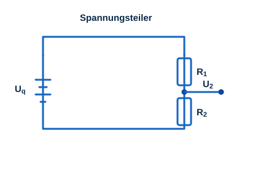

Was ist ein Spannungsteiler?
Ein Spannungsteiler ist eine einfache Schaltung, mit der eine Eingangsspannung in kleinere, proportionale Spannungen aufgeteilt wird. Dazu werden Widerstände in Reihe geschaltet. Die Eingangsspannung verteilt sich proportional zu den einzelnen Widerständen auf die Bauteile.

Berechnung (zwei Widerstände)
Bei zwei in Reihe geschalteten Widerständen R₁ und R₂ ergeben sich die Teilspannungen aus der Quellenspannung Uq:
Erweiterte Formel (mehrere Widerstände)
Bei mehreren in Reihe geschalteten Widerständen ist der Gesamtwiderstand die Summe aller Einzelwiderstände:
Die Spannung am n-ten Widerstand beträgt:
Belasteter Spannungsteiler
Wird parallel zu R₂ ein Lastwiderstand R₃ angeschlossen, verändert sich die Ausgangsspannung. Maßgeblich ist der effektive Widerstand aus der Parallelschaltung von R₂ und R₃:
Rechner: unbelasteter Spannungsteiler
Rechner: belasteter Spannungsteiler
Schaltungsmodul
Verwendung der Übungsschaltung
Auf der Übungsschaltung lassen sich die Widerstände R₁ und R₂ über Potentiometer einstellen. Mit dem Multimeter werden die Teilspannungen gemessen. Über den Schalter kann der Lastwiderstand R₃ zugeschaltet werden, um den Einfluss einer Belastung auf die Spannungsteilung zu beobachten.
Übungen
- Teilspannungen U₁ und U₂ im unbelasteten Zustand mit dem Multimeter messen.
- Die Potentiometer verstellen und beobachten, wie sich das Teilungsverhältnis verändert.
- Lastwiderstand R₃ zuschalten und die Veränderung der Ausgangsspannung U₂ messen und mit dem unbelasteten Fall vergleichen.
Bauteilwerte
| Bauteil | Wert |
|---|---|
| R₁ | 470 Ω – 10,47 kΩ (einstellbar) |
| R₂ | 470 Ω – 10,47 kΩ (einstellbar) |
| R₃ (Last) | 470 Ω |
Praktische Anwendung
Spannungsteiler werden unter anderem zur Einstellung von Arbeitspunkten in aktiven Schaltungen sowie für Messanwendungen (z. B. die Messung bzw. Anpassung von Spannungen) eingesetzt.